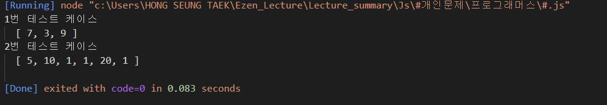
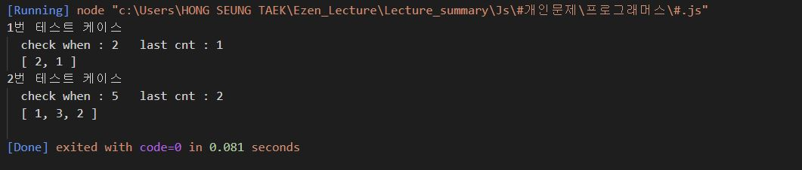
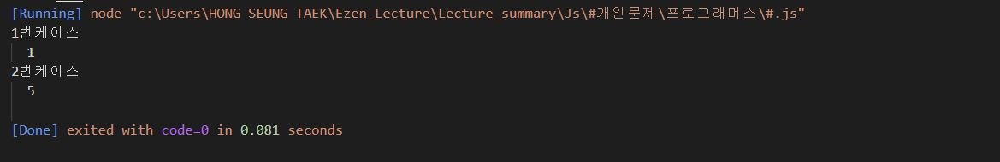

프로그래머스 팀에서는 기능 개선 작업을 수행 중입니다. 각 기능은 진도가 100%일 때 서비스에 반영할 수 있습니다.
또, 각 기능의 개발속도는 모두 다르기 때문에 뒤에 있는 기능이 앞에 있는 기능보다 먼저 개발될 수 있고, 이때 뒤에 있는 기능은 앞에 있는 기능이 배포될 때 함께 배포됩니다.
먼저 배포되어야 하는 순서대로 작업의 진도가 적힌 정수 배열 progresses와 각 작업의 개발 속도가 적힌 정수 배열 speeds가 주어질 때 각 배포마다 몇 개의 기능이 배포되는지를 return 하도록 solution 함수를 완성하세요.
제한 사항 작업의 개수(progresses, speeds배열의 길이)는 100개 이하입니다. 작업 진도는 100 미만의 자연수입니다. 작업 속도는 100 이하의 자연수입니다. 배포는 하루에 한 번만 할 수 있으며, 하루의 끝에 이루어진다고 가정합니다. 예를 들어 진도율이 95%인 작업의 개발 속도가 하루에 4%라면 배포는 2일 뒤에 이루어집니다. 입출력 예 progresses speeds return [93, 30, 55] [1, 30, 5] [2, 1] [95, 90, 99, 99, 80, 99] [1, 1, 1, 1, 1, 1] [1, 3, 2] 입출력 예 설명 입출력 예 #1 첫 번째 기능은 93% 완료되어 있고 하루에 1%씩 작업이 가능하므로 7일간 작업 후 배포가 가능합니다. 두 번째 기능은 30%가 완료되어 있고 하루에 30%씩 작업이 가능하므로 3일간 작업 후 배포가 가능합니다. 하지만 이전 첫 번째 기능이 아직 완성된 상태가 아니기 때문에 첫 번째 기능이 배포되는 7일째 배포됩니다. 세 번째 기능은 55%가 완료되어 있고 하루에 5%씩 작업이 가능하므로 9일간 작업 후 배포가 가능합니다.
따라서 7일째에 2개의 기능, 9일째에 1개의 기능이 배포됩니다.
입출력 예 #2 모든 기능이 하루에 1%씩 작업이 가능하므로, 작업이 끝나기까지 남은 일수는 각각 5일, 10일, 1일, 1일, 20일, 1일입니다. 어떤 기능이 먼저 완성되었더라도 앞에 있는 모든 기능이 완성되지 않으면 배포가 불가능합니다.
따라서 5일째에 1개의 기능, 10일째에 3개의 기능, 20일째에 2개의 기능이 배포됩니다.
※ 공지 - 2020년 7월 14일 테스트케이스가 추가되었습니다.
function solution(progresses, speeds) {
let arr = [];
progresses.forEach((e,i) => {
arr.push(Math.ceil((100-e)/speeds[i]));
});
console.log(arr);

let high = arr[0]; // hig의 첫번째 값은 arr의 0번째 인덱스 값
let as = []; // 함수에서 리턴할 (정답) 배열
let cnt =0; // 이번회차에 배포 될 프로그램 개수
let al = arr.length - 1; // arr의 마지막 인덱스 번호
arr.forEach((e,i) => {
// high가 e(이번 탐색 인덱스의 value)보다 크거나 같다면 이번회차에 배포 될 프로그램 개수(cnt) 를 하나 증가해준다.
if(high >= e) {
cnt ++;
}
// high가 e(이번 탐색 인덱스의 value)보다 작다면 high에 e를 넣어주고, cnt를 as(정답배열)에 push해준다.
// 그 후 cnt를 1로 초기화해준다(바로 이전 인덱스까지의 cnt를 푸쉬한 후에 이번 인덱스를 카운트해야하기 때문?)
else if(high < e){
high = e;
as.push(cnt);
cnt = 1;
}
//만약 마지막 인덱스 번호까지 왔다면 check라는 콘솔과 함께 cnt(개수)를 as(정답배열)에 push해준다.
if(i === al){
console.log("check when : " + i + " cnt : " + cnt);
as.push(cnt);
}
})
return as;
}

일반적인 프린터는 인쇄 요청이 들어온 순서대로 인쇄합니다. 그렇기 때문에 중요한 문서가 나중에 인쇄될 수 있습니다. 이런 문제를 보완하기 위해 중요도가 높은 문서를 먼저 인쇄하는 프린터를 개발했습니다. 이 새롭게 개발한 프린터는 아래와 같은 방식으로 인쇄 작업을 수행합니다.
내가 인쇄를 요청한 문서가 몇 번째로 인쇄되는지 알고 싶습니다. 위의 예에서 C는 1번째로, A는 3번째로 인쇄됩니다.
현재 대기목록에 있는 문서의 중요도가 순서대로 담긴 배열 priorities와 내가 인쇄를 요청한 문서가 현재 대기목록의 어떤 위치에 있는지를 알려주는 location이 매개변수로 주어질 때, 내가 인쇄를 요청한 문서가 몇 번째로 인쇄되는지 return 하도록 solution 함수를 작성해주세요.
제한사항 현재 대기목록에는 1개 이상 100개 이하의 문서가 있습니다. 인쇄 작업의 중요도는 1~9로 표현하며 숫자가 클수록 중요하다는 뜻입니다. location은 0 이상 (현재 대기목록에 있는 작업 수 - 1) 이하의 값을 가지며 대기목록의 가장 앞에 있으면 0, 두 번째에 있으면 1로 표현합니다. 입출력 예 priorities location return [2, 1, 3, 2] 2 1 [1, 1, 9, 1, 1, 1] 0 5 입출력 예 설명 예제 #1
문제에 나온 예와 같습니다.
예제 #2
6개의 문서(A, B, C, D, E, F)가 인쇄 대기목록에 있고 중요도가 1 1 9 1 1 1 이므로 C D E F A B 순으로 인쇄합니다.
function solution(arr, location) {
let i = 0;
let position = location; // 목표물의 위치
while (1) {
for (let j = i + 1; j < arr.length; j++) {
// i번째의 value가 j번째의 value보다 작다면 arr[i]가 맨 뒤로 이동
if (arr[i] < arr[j]) {
arr.push(+(arr.splice(i, 1)));
if (i === position) {
// 목표물이 맨 뒤로 밀리기 때문에 position을 arr.length-1로 해줌
position = arr.length - 1;
// 배열안의 요소들의 순서가 바뀌었기 때문에 다시 i번째부터 탐색하게 하기 위해 i--를 해주고 (for문 후에 i++이 되기 때문)
// break를 통해 for문에서 빠져나간다.
i--;
break;
} else {
// 목표물의 앞에 있는 배열 요소들 중에 하나가 맨 뒤로 밀려나기 때문에 position 값에서 1을 빼준다.
position--;
// 배열안의 요소들의 순서가 바뀌었기 때문에 다시 i번째부터 탐색하게 하기 위해 i--를 해주고 (for문 후에 i++이 되기 때문)
// break를 통해 for문에서 빠져나간다.
i--;
break;
}
}
}
// 아무것도 push하지 않은 상태에서 내부 for문이 끝나고
// i가 position에 해당하는 인덱스까지 오게 되면 return
if (i === position) return position + 1;
i++;
}
}
